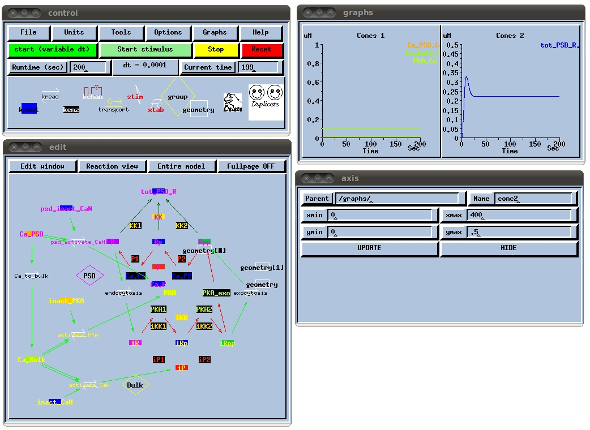

This is the readme for GENESIS computer code associated with the paper: Bhalla US (2011) Multiscale interactions between chemical and electric signaling in LTP induction, LTP reversal and dendritic excitability. Neural Netw These scripts were provided by Dr Upinder Bhalla. The cell (electrical compartmental model) is in ca1_7.p The associated channels are in proto17.g. You may recognize this as closely based on earlier GENESIS models for traub91. The signaling model for the spine in Figure 5 is in psd41b.g The signaling model for the dendrite is in kinloop12a.g in most cases. Exceptions are panels 5 F and 5G. In these panels the model is kinloop17_turnoff.g. For Figure 4, I used the same cell models, but the dendrite model was K_A_test.g and there was a dummy model for the PSD, psd_dummy.g -- In each case there are substantial MOOSE script files to drive the multiscale model, which is specific to a particular old version of MOOSE. I am working to port these over to the latest MOOSE and will update the database when done. As mentioned above although one needs the MOOSE script files to drive the multiscale simulations, the GENESIS code can be used to run the models individually. For example if you run genesis psd41b.g and start the simulation you should see a result similar to  Note: you will need to run genesis with kinetic kit 11 which is available here: http://www.ncbs.res.in/sitefiles/kkit11.tgz